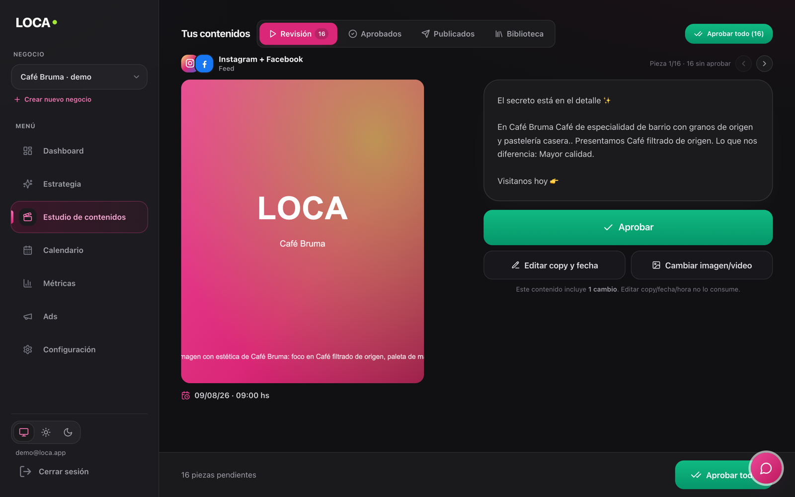
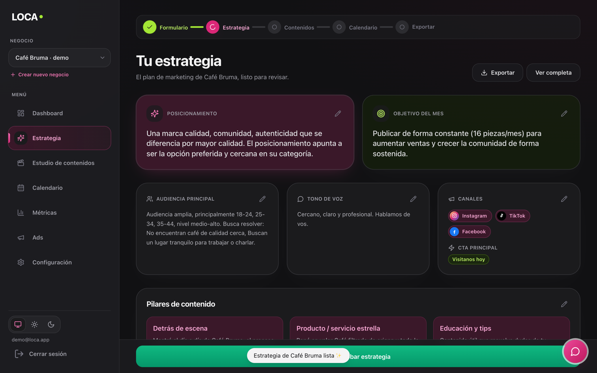
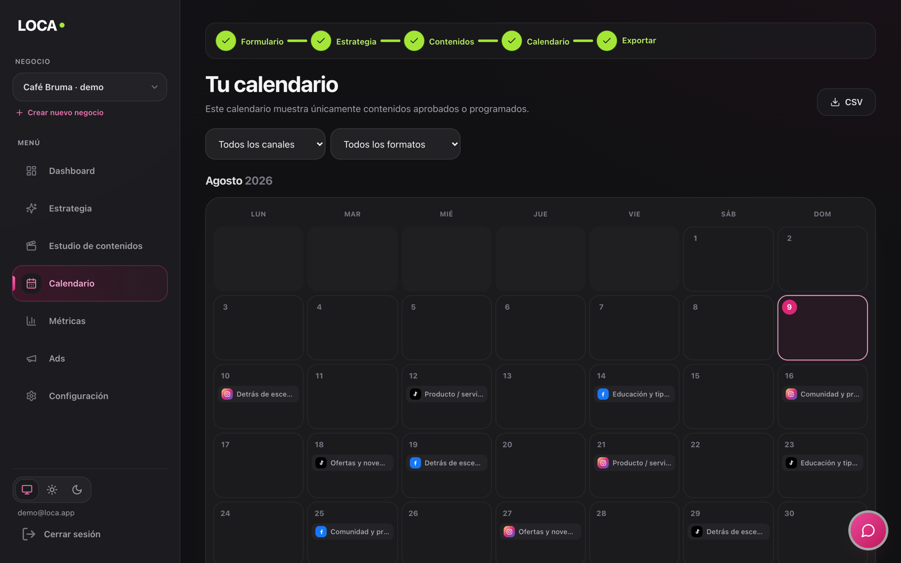

La agencia de marketing con IA
que trabaja sola.
Estrategia, contenido y publicación para pymes, startups y profesionales independientes de Latinoamérica. El cliente solamente aprueba.
heyloca.ai · Sebastián — CEO · Alan Roitman — CTO/CPO
Para un pequeño negocio, hacer buen marketing
es caro, lento o directamente imposible.
USD 800–2.000+/mes
Agencia tradicional
Inalcanzable para la enorme mayoría de los negocios de la región. Mínimos de contrato, procesos lentos, atención despriorizada para cuentas chicas.
USD 200–500/mes
Freelancer
Calidad y constancia impredecibles. Sin estrategia real, alta rotación, y el negocio termina gestionando a una persona más.
USD 20–50/mes
Herramientas con IA
Canva, Predis, Ocoya: el trabajo sigue siendo del negocio — pensar, elegir, redactar, diseñar, programar. La herramienta no lo reemplaza.
27,5M
de mipymes en América Latina — el 99% de las empresas de la región (IFC / CEPAL)
1 de 3
trabajadores de la región es independiente (OIT) — profesionales y emprendimientos sin equipo de marketing posible
0
opciones reales entre la herramienta que no hace el trabajo y la agencia que no pueden pagar
Un pequeño negocio no quiere hacer marketing.
Quiere que el marketing esté hecho.
LOCA es la agencia. Completa,
y trabaja sola.
Por una suscripción mensual, LOCA entrega lo que antes exigía contratar una agencia, un diseñador y un community: el marketing pasa todos los meses, sin que el negocio lo haga.
Eva, nuestra agente de IA
Es quien acompaña a cada cliente: entiende su negocio, le presenta el trabajo listo y aprende de cada aprobación y cada feedback. La relación de agencia, sin la agencia.
El nombre es la promesa
LOw Cost Agency: servicio de agencia a precio de software. Desde USD 89/mes — el precio de unas horas de freelancer, el resultado de una agencia.
Del alta a publicar en piloto automático.
Contás tu negocio (10 min)
Eva escanea tu sitio y redes, detecta identidad, servicios y tono. Lo que no encuentra, te lo pregunta. Nunca inventa.
Eva propone la estrategia
Objetivos, pilares de contenido y calendario del mes. Editable sección por sección.
Genera las piezas
Copy + imagen alineados a tu marca. Si algo no te gusta, le das feedback y lo rehace.
Aprobás → se publica solo
Programación y publicación automática vía API oficial de Meta. Ves el post real desde tu panel.

Pantalla real del MVP — el flujo de revisión y aprobación.
No es una idea: el producto ya existe.
MVP funcional de punta a punta. Las pantallas de este deck son reales.


Arriba: la estrategia generada y editable. Abajo: el mes programado por canal, listo para publicarse solo.
La tecnología
- Orquestación determinística de agentes especializados — estrategia, contenido, imagen, feedback — con control de calidad por pieza. No es un wrapper de chat.
- Brand Bible por cliente: la capa de datos propietaria (identidad, tono, productos, aprendizajes) que alimenta cada generación.
- Model routing multi-proveedor: el modelo justo para cada tarea, intercambiable sin rebuild. Cero dependencia de un solo proveedor.
- Publicación vía APIs oficiales (Meta hoy) con estado real de cada post y métricas de vuelta al sistema.
- Multi-país nativo: idioma, timezone, fechas comerciales y moneda por mercado, desde el día uno.
~20 min
del alta al primer mes de contenido listo para aprobar.
La ventana se abrió hace meses.
Todavía no tiene dueño en español.
La calidad cruzó el umbral
Recién desde 2025 la generación de texto e imagen alcanza calidad de agencia de forma consistente. Antes de eso, este producto era imposible.
Hoy se pagan 4 o 5 herramientas — y el trabajo sigue sin hacerse
Diseño + programador de posts + IA de copy + IA de imagen + analytics: suscripciones sueltas que suman más que LOCA y dejan todo el trabajo en manos del negocio. Consolidamos el stack entero en un servicio terminado.
La IA es barata solo si está bien usada
El precio de la inferencia se desplomó — pero mal orquestada (regeneraciones infinitas, el modelo equivocado para cada tarea) se vuelve carísima. Saber operarla con margen es ingeniería, y es exactamente nuestro oficio.
La categoría está vacante
Las herramientas globales no hablan LATAM: ni el idioma, ni los precios, ni las fechas, ni la informalidad de sus pequeños negocios. El primero que gane la marca "agencia IA" en español define la categoría.
Contexto: el 56% del gasto publicitario de LATAM ya es digital y la región será la segunda de mayor crecimiento del mundo en 2026 (eMarketer).
El presupuesto ya existe.
Falta quién ejecute por ese precio.
Mipymes + independientes de LATAM a ticket LOCA (USD 89/mes)
(IFC)
6 países de lanzamiento: segmento objetivo digitalmente activo
AR·MX·CO·CL·PE·UY
Año 3: ~6.500 clientes
El target que nadie atiende
Pequeños comercios, startups y profesionales independientes que necesitan presencia constante — no community management complejo. El segmento de independientes, por sí solo, es enorme y crece.
El gasto ya existe
La publicidad digital en LATAM superó los USD 40B en 2025 y llegará a USD 50B en 2026. LOCA no tiene que crear el gasto: solo capturarlo con un precio que por fin cierra.
Upside no modelado: EE.UU.
~5M de negocios hispanos en EE.UU.: mismo idioma, mismo playbook, ticket 3–4× mayor. Fuera de estas proyecciones — es la expansión natural del año 3, con la próxima ronda.
Fuentes: IFC/SME Finance Forum, CEPAL, OIT, eMarketer 2025–2026. Detalle de supuestos disponible en anexo.
Suscripción simple. Margen de software.
Contenidos
USD 89/mes
12 contenidos mensuales, estrategia, calendario y publicación automática.
Pro
USD 179/mes
Más volumen y formatos, múltiples canales y prioridad de generación.
Enterprise
A cotizar
Multi-marca y necesidades a medida. Un negocio = una suscripción.
Costo de servir
< USD 20 de IA por cliente/mes, bajando con escala y optimización del pipeline.
Margen bruto
USD 50–70 por cliente/mes (~65–75%), desde el día uno.
Expansión
Ads, email y web (roadmap) suben el ticket sin subir el CAC: se venden a clientes que ya confían en Eva.
La vida de un cliente, en 4 pasos.
USD ~130
Conseguirlo
Paid media + su primer mes gratis, ya incluido en el CAC. Es toda la inversión que ese cliente va a necesitar.
USD ~70/mes
Servirlo con margen
Paga USD ~105/mes (mix de planes) y servirlo cuesta poco: dos tercios quedan como margen bruto.
Mes 2
Ya se repagó
Con dos meses pagos, el margen acumulado supera el CAC. Desde ahí, todo es retorno — y el capital rota rápido.
USD ~1.150
Lo que deja
~16 meses de vida promedio (churn 6%/mes, conservador) × USD ~70 de margen. Ese es el LTV.
LTV / CAC > 5×
Cada dólar invertido en adquisición vuelve multiplicado por cinco — aun con el churn pesimista típico de pequeños negocios. Cada punto de churn que baje, agranda el múltiplo.
Supuestos explícitos: CAC benchmark de SaaS self-service ajustado a CPMs de LATAM (sensiblemente más bajos que EE.UU.); churn 6%/mes año 1 mejorando hacia 4,5%. Se validan en el piloto y primer trimestre comercial.
Las herramientas te dan el pincel.
LOCA te entrega el cuadro.
| Precio/mes | ¿Quién hace el trabajo? | Estrategia | Publica solo | Escala | |
|---|---|---|---|---|---|
| Agencia tradicional | USD 800–2.000+ | La agencia | Sí | Sí | No — personas |
| Freelancer | USD 200–500 | El freelancer (a veces) | Rara vez | Manual | No |
| Herramientas IA Canva, Predis, Ocoya… | USD 20–50 | El cliente | No | Parcial | Sí |
| Generadores de posts Marky, Blaze (EE.UU.) | USD 23–60 | La IA genera; el cliente cura y ajusta | Superficial | Sí | Sí |
| LOCA | USD 89–179 | Eva — el cliente solo aprueba | Sí | Sí | Sí — software |
Los más parecidos (Marky, Blaze) son generadores de posts en inglés: la estrategia, la curación y el resto del marketing siguen en manos del negocio. LOCA es la relación de agencia entera — con roadmap hacia ads, email y web — nativa en español y localizada para LATAM.
Resolvimos el mayor cuello de botella
de las agencias: el talento humano.
Una agencia tradicional crece contratando gente. LOCA crece como software: cada cliente nuevo no suma nómina, suma margen. Calidad que no depende de nadie, servicio que no duerme y un costo 10× menor. Marketing 100% digital, global y sin límites.
Cada aprobación nos hace mejores.
Cada mes, más difíciles de reemplazar.
Brand Bible propietaria
Identidad, tono, productos, fotos, fechas y aprendizajes de cada cliente viven en LOCA. Migrar es volver a empezar de cero: el switching cost crece cada mes.
Flywheel de datos
Cada aprobación, edición y feedback entrena qué funciona por industria, país y formato. Miles de clientes → un sistema que ninguna herramienta genérica puede replicar.
Ventaja de costos operativa
La orquestación optimizada hace que servir cueste centavos donde a un imitador le cuesta dólares: el precio bajo sigue siendo rentable para nosotros y ruinoso para quien copie sin la curva de aprendizaje.
Localización real de LATAM
Fechas comerciales por país e industria, precios en moneda local, voseo/usted según mercado, entendimiento de la pyme informal. Lo que un player global no prioriza.
La máquina de adquisición:
cuatro canales, un CAC objetivo.
Paid social
CPMs de LATAM entre los más bajos del mundo: el mismo presupuesto rinde múltiplos de lo que rinde en EE.UU. Acá vive el CAC objetivo de USD 130.
1er mes gratis como oferta de entrada
Financiado dentro del CAC. El producto se vende solo una vez que Eva entrega el primer calendario: la barrera no es el precio, es probarlo.
Alianzas de confianza
Cámaras de comercio, estudios contables y coworks: canales con acceso directo y recomendación cálida a miles de pequeños negocios.
Dogfooding
El marketing de LOCA lo hace LOCA. Cada pieza nuestra es una demo pública del producto — y el laboratorio donde afinamos el playbook.
Orden de mercados y disciplina de expansión: en la slide de roadmap. Regla: cada país nuevo se abre recién cuando el anterior repaga su adquisición. El producto ya nace multi-país; expandirse no requiere rebuild.
24 meses, 3 etapas.
Cada etapa deja un hito medible.
Etapa 1 · Meses 0–6 — Validar
Piloto + lanzamiento Argentina. 15–20 negocios reales, 1 mes gratis, con targets declarados: ≥70% de aprobación en primer intento, ~20 min al primer contenido, máx. 2 regeneraciones y conversión a pago al cerrar el mes gratis.
Hito: CAC ≤ USD 130 y playbook validados con datos.
Etapa 2 · Meses 6–18 — Replicar
México (el mercado hispanohablante más grande, con red local vía Tu Socio Local) + producto: carruseles, reels y stories, LinkedIn, y Eva operando Meta Ads y Google Ads.
Hito: ~700 clientes y USD ~1M de ARR run-rate.
Etapa 3 · Meses 18–24 — Ampliar
CO · CL · PE · UY + marketing completo: email marketing, creación de páginas web y curaduría humana premium para cuentas Enterprise.
Hito: unit economics probados a escala → Seed.
Cada módulo nuevo sube el ARPU de clientes existentes — expansión sin CAC adicional — y agranda el foso frente a herramientas de un solo propósito.
Una agencia real + producto técnico.
Founder-market fit de manual.
CEO
Sebastián Adlerstein
Fundador de INFINIDAD (agencia de marketing en operación) y Tu Socio Local (expansión de empresas AR↔MX). Años atendiendo pequeños negocios: conoce el pain, el precio que aguantan y el servicio que esperan — desde adentro.
LinkedIn ↗ URL pendiente
CTO / CPO
Alan Roitman
Lidera la arquitectura del pipeline de agentes y la plataforma. Bio y experiencia: pendiente
LinkedIn ↗ URL pendiente
Directora de cuentas · IA
Eva
Atiende a todos los clientes a la vez, 24/7, en su idioma y con su tono. No renuncia, no se enferma y mejora todas las semanas. La primera empleada que escala como software.
Advisors: en conversaciones avanzadas con referentes de primera línea de la industria publicitaria mexicana. Con la ronda se suman roles de growth y customer success.
USD 8M de ARR run-rate en 3 años.
ARR run-rate a cierre de cada año desde el cierre de la ronda.
| Año 1 | Año 2 | Año 3 | |
|---|---|---|---|
| Clientes activos | 700 | 2.800 | 6.500 |
| MRR (cierre) | USD 74K | USD 294K | USD 680K |
| Países activos | 2 (AR + MX) | 6 | LATAM |
| Margen bruto | ~65% | ~70% | ~75% |
Supuestos: ARPU USD 105 · CAC USD 130 · churn 6%→4,5%/mes · lanzamiento comercial en el mes 3 post-ronda · reinversión del margen en adquisición. Modelo detallado disponible.
USD 500K para ganar Argentina y México
— y abrir el camino al resto de LATAM.
SAFE post-money · cap USD 3,5M · 20% de descuento · runway 18–24 meses.
Con esta ronda
Las 3 etapas del roadmap completas: validar (Argentina), replicar (México) y ampliar (CO·CL·PE·UY) — 700+ clientes pagos, USD ~1M de ARR run-rate y unit economics con datos reales.
Después: Seed
Acelerar LATAM y abrir el mercado hispano de EE.UU. (el upside no modelado de la slide de mercado) — o directamente conversaciones estratégicas.
La salida
Venta estratégica en 3–5 años: plataformas de SMB software, holdings publicitarios y martech buscan exactamente esta capacidad y esta base de clientes.
Sebastián · sebastian@infinidad.com.ar · heyloca.ai